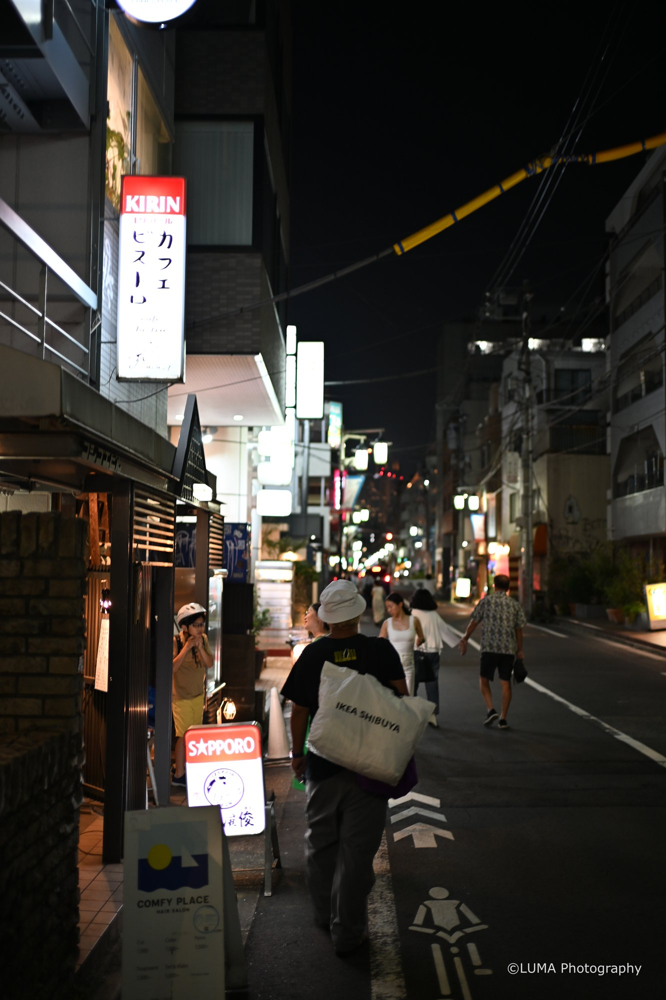
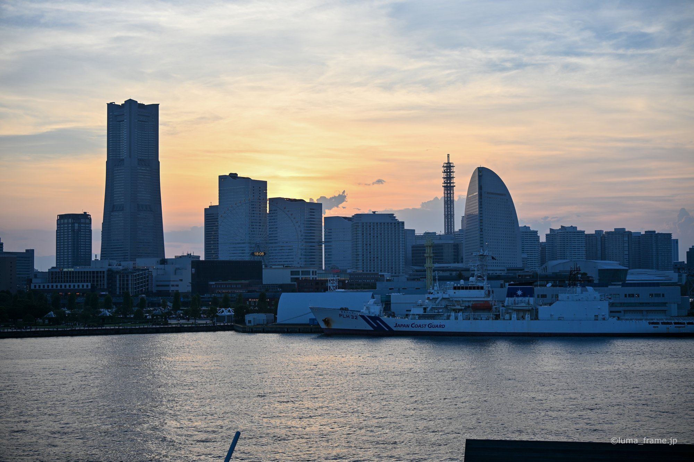
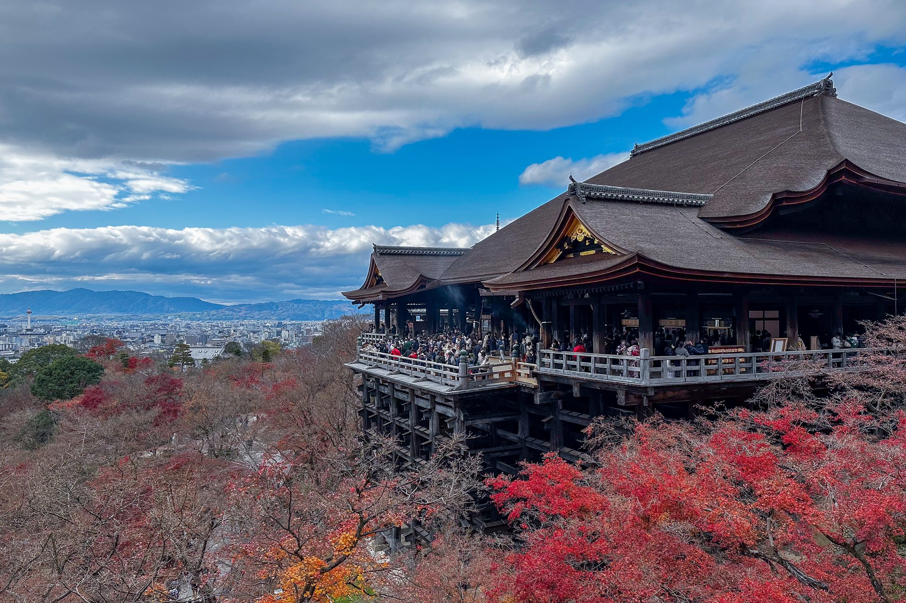
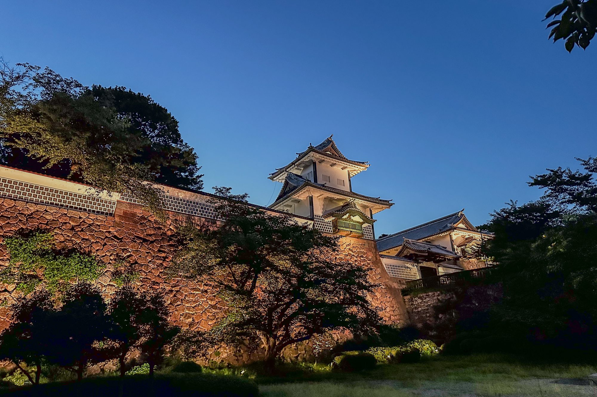
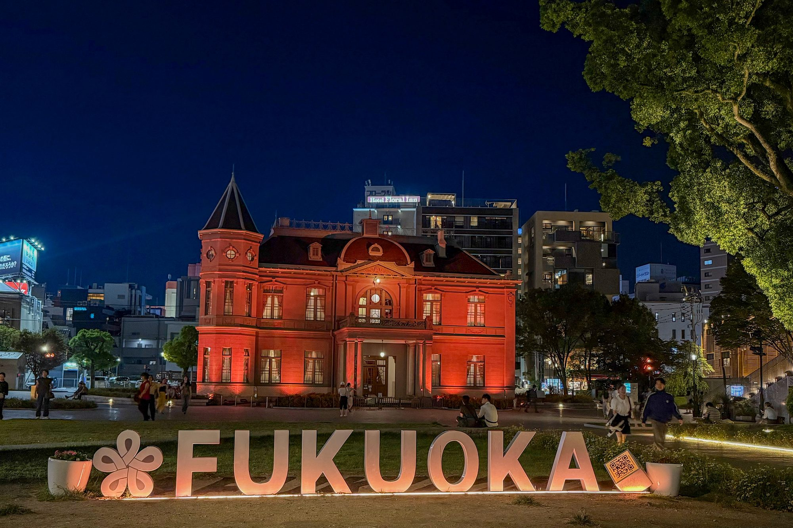
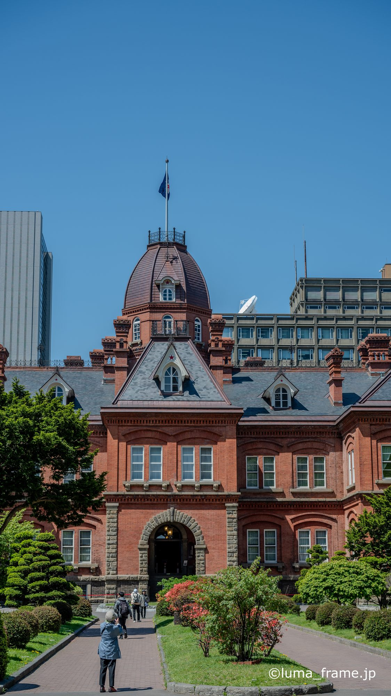
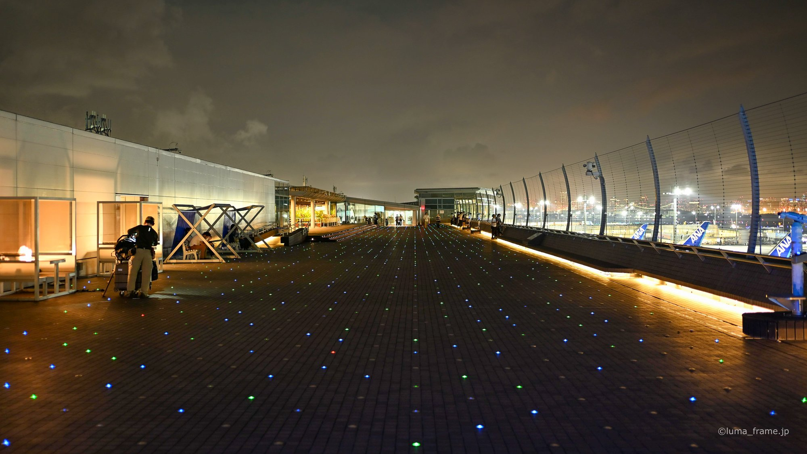
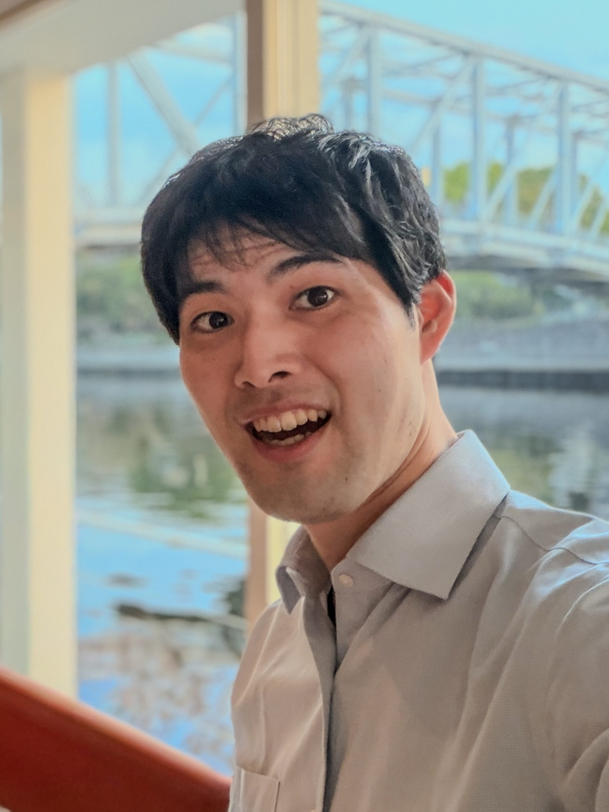

NEXT · 受付中
S.League 25 個人戦
2026年10月18日 (日) 12:00〜20:00
8時間・全7戦、定員12名 (残り2席)
参加費 7,300円 (銀行振込は7,000円)
締切 10月12日 (月) 22:00
LUMA | Clarity by Design
言葉と体験で、その人の自信を支える。それが LUMA で私が目指していることです。いずれのサービスも、最初から最後まで私が担当いたします。
賭けない、飲まない、対局中は吸わない健康麻雀の大会です。プロ雀士やプロを目指す方も参加しており、初中級以上の方が自分の実力を試しにいらしています。
NEXT · 受付中
S.League 25 個人戦
2026年10月18日 (日) 12:00〜20:00
8時間・全7戦、定員12名 (残り2席)
参加費 7,300円 (銀行振込は7,000円)
締切 10月12日 (月) 22:00

NEXT+1 · 受付中
S.League 26 個人戦
2026年11月8日 (日) 12:00〜18:00
6時間・全5戦、定員20名
参加費 5,200円 (銀行振込は5,000円)
締切 11月1日 (日) 22:00
日本全国17のエリアを、英語でご案内します

東京
浅草、渋谷、新宿

神奈川
横浜、鎌倉、湘南・江ノ島、箱根

富士山
富士山周辺

伊豆
熱海、伊東、下田

関西
大阪市内、京都市内

北陸
金沢市内

九州
福岡・太宰府・湯布院

北海道
札幌市内

空港
羽田空港
予約の代行と車での送迎は行っておりません。私がお引き受けするのは、当日のご案内までとなります。
付き添えない日だけを私にお任せください。ご都合のつく日はご同行も可能で、道中は日本語で私とお話しいただけます。行き先は浅草や鎌倉、京都など17のエリアからお選びください。エリアごとの英語のページは、URL をそのままゲストの方へお送りいただけます。
到着した日や帰国前の空き時間には、2時間ほどで1つの街を回る形が向いています。人数は1組6名までを予定しております。名所の説明は英語で私がお引き受けします。私は中学3年生でオーストラリアのブリスベンへ渡り、9年間を現地で過ごしました。
羽田、湘南、伊丹、熱海、横浜で撮影した作品です
LUMA Frame
料金はすべて税込です。

「環境が変われば、人生は変わる」
愛知県で生まれ、15歳から9年間、オーストラリアのブリスベンで暮らしました。中学から大学卒業までの多感な時期をオーストラリアで過ごし、現地大学での就業も経験しております。異文化理解・異文化交流の分野を強みとしており、2020年の帰国後は、日本語・英語どちらも扱えるバイリンガルとして、多くの舞台で活躍してまいりました。
無料相談
まずは30分、お話をお聞かせください。
どのサービスが合うか、決まっていなくても構いません。状況をお伺いした後に、進め方と料金をご案内いたします。